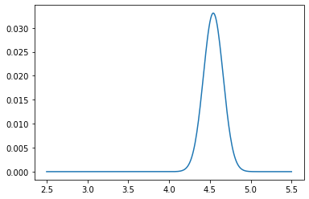

Modeling a Time-Variant Random Variable by Using Drift!¶
[29]:
import pandas_datareader.data as web
from datetime import datetime
import matplotlib.pyplot as plt
import numpy as np
start = datetime(2016, 9, 1)
end = datetime(2021, 8, 31)
ticker = 'AAPL'
stock = web.DataReader(ticker, 'stooq', start, end)
prices = stock.reset_index().sort_values('Date',ascending=True)['Close'].to_numpy()
[30]:
prices
[30]:
array([ 25.027, 25.257, 25.249, ..., 148.6 , 153.12 , 151.83 ])
[31]:
plt.plot(prices)
plt.show()
[5]:
logs = np.log(prices)
[6]:
plt.plot(logs)
[6]:
[<matplotlib.lines.Line2D at 0x24398172b50>]
[7]:
first_diff = np.diff(logs)
print(first_diff.mean())
print(first_diff.std())
plt.plot(first_diff)
plt.show()
0.001434213390458498
0.01905342412763582
[9]:
avg_return = first_diff.mean()
avg_logs = np.array([logs[0]+avg_return*i for i in range(len(logs))])
plt.plot(logs)
plt.plot(avg_logs-.15)
plt.show()
[10]:
plt.hist(first_diff, bins=25)
plt.title('Daily Log Returns')
plt.show()
[48]:
avg_return
[48]:
0.001434213390458498
[12]:
l = len(prices)
total_return = np.log(prices[-1])-np.log(prices[0])
avg_return = total_return/l
start_exp = np.log(prices[0])
plt.plot(prices)
plt.plot(np.exp(avg_logs-.15))
plt.show()
[50]:
1 - np.exp(1) / np.exp(1+first_diff.mean())
[50]:
0.001433185397946235
[51]:
# An addition of .001 to the exponent translates almost exactly to a .1% increase in value
first_diff.mean()
[51]:
0.001434213390458498
So let’s use this to create a stock that oscillates around a mean that grows exponentially. We’ll model this by making the stock price an exponential function with a parameter in the exponent. Every day this parameter grows by .001; however the actual value of the stock is a random variable that we will model similarly to the mean but by bootstrapping.
[34]:
from scipy.stats import norm
# Particle filter
pf_index = np.linspace(2.5, 5.5, 301)
pf = np.full(301, 1./301.) # A completely naive prior
e_values = [(pf_index * pf).sum()]
log_means = [logs[0]]
mean_gain = first_diff.mean()
log_values = [logs[0]]
sigma = first_diff.std()
ps = [norm.pdf(0, loc=0, scale=5*sigma)]
for count in range(1,1000):
accept=False
log_means.append(log_means[-1] + mean_gain)
# Go through MCMC accept/reject loop
while not accept:
new_log_value = log_values[-1] + np.random.choice(first_diff)
new_p = norm.pdf(new_log_value, loc=log_means[-1], scale=5*sigma)
if new_p > ps[-1]:
accept = True
else:
p = new_p / ps[-1]
accept = np.random.choice([True, False], p=[p, 1-p])
log_values.append(new_log_value)
old_p = new_p
# Applying the likelihood function
if count % 1 == 0:
L = []
for i in range(len(pf_index)):
arr = norm.pdf(np.array(log_values[-1:]), loc=pf_index[i], scale=2*sigma)
L.append(arr.prod())
L = np.array(L)
pf = (5 + L) * pf
# Here we add the drift, which for simplicity we call a random variable X
# If you look carefully, you'll see that it's convolution
new_pf = pf.copy()
for i in range(pf_index.shape[0]):
# i is our index
t = pf_index[i]
t_minus_tau = t - pf_index
P_X = norm.pdf(t_minus_tau, loc=0, scale=mean_gain*np.sqrt(20))
new_pf[i] = (pf * P_X).sum()
pf = new_pf / new_pf.sum()
# And then we normalize the weights so they sum to 1
new_e_value = (pf*pf_index).sum()
e_values.append(new_e_value)
if count % 100 == 0:
plt.plot(pf_index, pf)
plt.show()
[36]:
plt.figure(figsize=(16,6))
plt.plot(log_means)
plt.plot(log_values)
plt.plot(range(0,1000),e_values)
plt.plot(range(0,1000),e_values+6*sigma)
plt.plot(range(0,1000),e_values-6*sigma)
plt.legend(['Mean','Log Values','Expected Log Values'])
plt.show()
[103]:
plt.figure(figsize=(16,6))
plt.plot(np.exp(log_means))
plt.plot(np.exp(log_values))
plt.plot(range(0,1000,20),np.exp(e_values))
plt.plot(range(0,1000,20),np.exp(e_values+9*sigma))
plt.plot(range(0,1000,20),np.exp(e_values-9*sigma))
[103]:
[<matplotlib.lines.Line2D at 0x20b0eb1edf0>]
[23]:
from scipy.stats import norm
pf_index = np.linspace(2.5, 5.5, 301)
pf = np.full(301, 1./301.)
e_values = [(pf_index * pf).sum()]
for count in range(len(logs)):
# Applying the likelihood function
if count % 20 == 0:
L = []
for i in range(len(pf_index)):
arr = norm.pdf(np.array(logs[count-20:count]), loc=pf_index[i], scale=sigma)
L.append(arr.prod())
L = np.array(L)
pf = (5 + L) * pf
# Here we add the drift, which for simplicity we call a random variable X
# If you look carefully, you'll see that it's convolution
new_pf = pf.copy()
for i in range(pf_index.shape[0]):
# i is our index
t = pf_index[i]
X = t - pf_index
P_X = norm.pdf(X, loc=mean_gain, scale=sigma*np.sqrt(20))
new_pf[i] = (pf * P_X).sum()
pf = new_pf / new_pf.sum()
# And then we normalize the weights so they sum to 1
new_e_value = (pf*pf_index).sum()
e_values.append(new_e_value)
if count % 100 == 0:
plt.plot(pf_index, pf)
plt.show()

[26]:
plt.figure(figsize=(16,6))
plt.plot(logs)
plt.plot(range(0,len(logs)+20,20), e_values)
plt.plot(range(0,len(logs)+20,20), e_values+6*sigma)
plt.plot(range(0,len(logs)+20,20), e_values-6*sigma)
[26]:
[<matplotlib.lines.Line2D at 0x243980836d0>]
[28]:
plt.figure(figsize=(16,6))
plt.plot(prices)
plt.plot(range(0,len(logs)+20,20), np.exp(e_values))
plt.plot(range(0,len(logs)+20,20), np.exp(e_values+6*sigma))
plt.plot(range(0,len(logs)+20,20), np.exp(e_values-6*sigma))
[28]:
[<matplotlib.lines.Line2D at 0x243a019d760>]
[ ]: